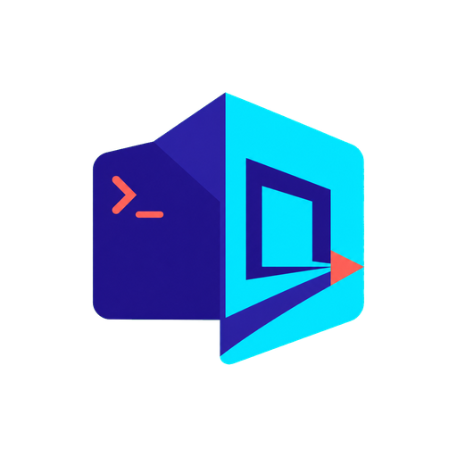

Choose Agent to start the local VM and model tools, or Human to connect to an agent that is already running its AI model.
Learn how LiteRT-LM runs fast generative AI directly on the device: Blazing-fast on-device GenAI with LiteRT-LM.
chrome://extensions
manifest.json
Starting secure WebRTC agent…
Your browser did not allow direct clipboard access. Paste the text below, then select Insert.